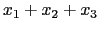
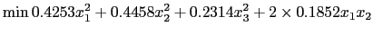

We illustrate how to build a simple Markowitz portfolio optimization problem (a quadratic programming problem) from template.m. First copy template.m to markowitz.m.
The problem consists in investing in a number of stocks. The expected returns and risks
(covariances) of the stocks are known. Assume that the decision variables
represent the fraction of wealth invested in stock  and that no stock can have
more than 75% of the total wealth. The problem then is to minimize the total risk
subject to a budget constraint and a lower bound on the expected portfolio return.
and that no stock can have
more than 75% of the total wealth. The problem then is to minimize the total risk
subject to a budget constraint and a lower bound on the expected portfolio return.
Assume that there are three stocks (variables) and two constraints (do not count the upper limit investment of .75 on the variables.).
% the number of constraints numCon = 2; % the number of variables numVar = 3;
All the variables are continuous
VarType='CCC';
Next define the constraint upper and lower bounds. There are two constraints. A equality constraint (an ) and a lower bound on portfolio return of .15 (a ). These two constraints are expressed as
BU = [1 inf]; BL = [1 .15];
The variables are nonnegative and have upper limits of .75 (no stock can comprise more than 75% of the portfolio). This is written as
VL = []; VU = [.75 .75 .75];
There are no nonzero linear coefficients in the objective function, but the objective function vector must always be defined and the number of components of this vector is the number of variables.
OBJ = [0 0 0 ]
Now the linear constraints. In the model the two linear constraints are
|  | |||
These are expressed as
A = [ 1 1 1 ; 0.3221 0.0963 0.1187 ];
Now for the quadratic terms. The only quadratic terms are in the objective function. The objective function is
|  | |||
The quadratic matrix has 4 rows and a column for each quadratic term. In this example there are six quadratic terms. The first row of is the row index where the terms appear. By convention, the objective function has index -1 and we count constraints starting at 0. The first row of is
-1 -1 -1 -1 -1 -1
The second row of is the index of the first variable in the quadratic term. We use zero based counting. Variable  has index 0, variable
has index 0, variable  has index 1, and variable has index 2. Therefore, the second row of is
has index 1, and variable has index 2. Therefore, the second row of is
0 1 2 0 0 1
The third row of is the index of the second variable in the quadratic term. Therefore, the third row of is
0 1 2 1 2 2
The last (fourth) row is the coefficient. Therefore, the fourth row is
.425349654 .445784443 0.231430983 .370437388 .27862509 .27763384
The quadratic matrix is
Q = [ -1 -1 -1 -1 -1 -1; 0 1 2 0 0 1 ; 0 1 2 1 2 2; .425349654 .445784443 0.231430983 ... .370437388 .27862509 .27763384];
Finally, name the problem, specify the solver (in this case ipopt), the service address (and password if required by the service), and call the solver.
prob_name = 'Markowitz Example from Anderson, Sweeney, Williams, and Martin'
password = 'chicagoesmuyFRIO';
%
%the solver
solverName = 'ipopt';
%the remote service service address
%if left empty we solve locally
serviceAddress='http://gsbkip.chicagogsb.edu/os/OSSolverService.jws';
% now solve
callMatlabSolver( numVar, numCon, A, BL, BU, OBJ, VL, VU, ObjType, VarType, ...
Q, prob_name, password, solverName, serviceAddress)